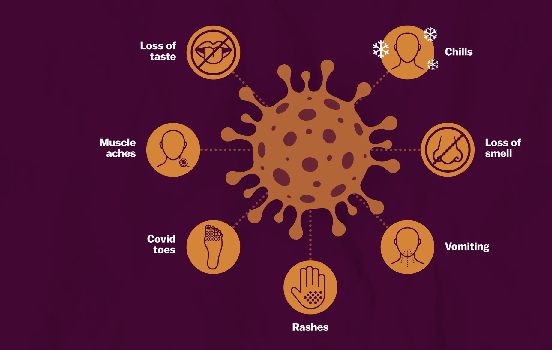

Focus on the Coronavirus disease (COVID-19)
Coronavirus disease (COVID-19) is an infectious disease caused by a newly discovered coronavirus.
Coronavirus spreads primarily through droplets of saliva or discharge from the nose when an infected person coughs
or sneezes. Most people infected with the COVID-19 virus will experience mild to moderate respiratory
illness and recover without requiring special treatment. Older people and those with underlying medical problems
like cardiovascular disease, diabetes, chronic respiratory disease, and cancer are more likely to
develop serious
illnesses.
COVID-19 pandemic
Coronavirus disease (COVID-19) is now dominating the lives of everyone, and its history is constantly
being rewritten.
On 31 December 2019, the World Health Organization (WHO) was formally notified about a cluster of cases
of pneumonia in Wuhan City, home to 11 million people and the cultural and economic hub of central China.
By 5 January, 59 cases were known and none had been fatal. Ten days later, WHO was aware of 282 confirmed
cases, of which four were in Japan, South Korea, and Thailand. There had been six deaths in Wuhan, 51 people
were severely ill and 12 were in critical condition.
The virus responsible was isolated on 7 January and its genome was shared on 12 January. The cause of the
severe acute respiratory syndrome that became known as COVID-19 was a novel coronavirus, SARS-CoV-2.
COVID-19 Symptoms

COVID-19 affects different people in different ways. Most infected people will develop mild to moderate
illness and recover without hospitalization.
The most common symptoms are fever, dry cough, and tiredness. Less common symptoms are aches and pains,
sore throat, diarrhoea, conjunctivitis, headache, loss of taste or smell, a rash on the skin, or
discolouration of fingers or toes.
People with mild symptoms who are otherwise healthy should manage their symptoms at home. On average it
takes 5–6 days from when someone is infected with the virus for symptoms to show, however it can take up to 14
days.